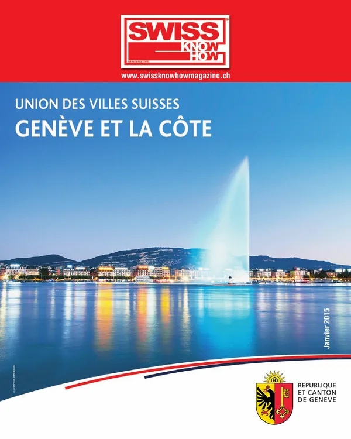

Texte intégral
La Résidence Carouge-Centre et la Résidence Les Pervenches appartiennent à La Fondation carougeoise pour le Logement de personnes agées.
Cette Fondation a pour buts la construction, la gestion et l'exploitation d'établissements médico-sociaux (EMS) et de logements à encadrement médico-social (IEPA) destinés à héberger des personnes âgées sur le territoire de la Ville de Carouge. Fondation de droit public, elle est placée sous la surveillance du Conseil municipal de la commune de Carouge.
La Résidence Carouge-Centre est un immeuble avec encadrement social. Ce qui signifie que cette habitation dispose de logements indépendants dont ses habitants sont locataires à part entière. Les appartements sont équipés d’un système d’appels permettant d’obtenir de l’aide auprès du personnel d’encadrement. Afin de favoriser le maintien à domicile et l’autonomie des locataires, un véritable encadrement social et des infrastructures sont disponibles. L’objectif est d’améliorer les conditions de vie des locataires grâce à une action préventive appropriée et d’offrir un soutien aux locataires souffrant de solitude. Il s’agit également de limiter autant que possible les hospitalisations et les entrées prématurées en EMS.
La Résidence Les Pervenches accueille des retraités qui nécessitent des soins tant sur le plan physique que psychique. Cette pension ouverte offre la particularité de permettre aux résidants leurs allées et venues ainsi que leurs familles et proches sans contrainte d’horaire. Située entre le centre de Carouge et le quartier des Acacias, cette résidence bénéficie de la proximité de nombreux magasins et restaurants, ainsi qu’une excellente desserte des transports publics. Par ailleurs, le résidant est libre de conserver son médecin traitant ou d’être pris en charge par le médecin de la résidence. Cette habitation peut accueillir 72 résidants en chambre individuelle. Cet établissement est subventionné par la République et canton de Genève.
Texte paru dans Swiss Knowhow – Genève et La Côte (janvier 2015), p. 19, tel que publié dans l'édition imprimée. En cas d'écart, la version imprimée fait foi.

Paru dans
Swiss Knowhow – Genève et La Côte (janvier 2015)
2015 · page 19 · article original en français
Signaler une erreur Lire l'article complet PDF